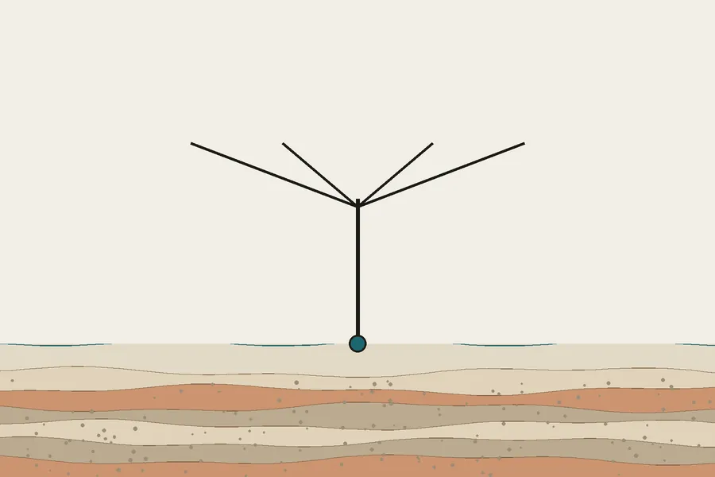

Reconstructing ancient genomes from gene counts: A robust likelihood framework with sampling bias correction
Csűrös M · PNAS 123(19):e2537812123
Can ancestral genomes be reconstructed robustly from gene counts alone, with a correction for how genomes and families were sampled?
#32 #9 #10
Our analysis
- The question
- Can ancestral genomes be reconstructed robustly from gene counts alone, with a correction for how genomes and families were sampled?
- What they tried
- A gain-loss-duplication (GLD) likelihood on copy-number profiles is more robust at depth than reconciling thousands of weakly resolved gene trees.
- Method and data
- Birth-death GLD model with sampling-bias correction; simulations of gain-loss-duplication processes (no transfer gene trees, no sequences); reanalysis of published large reconciliations.
- Key results
- In simulation GLD recovers ancestral content with median TPR 98.6%. The paper says the root genome is the hardest case. It argues the 700-genome study (Moody 2024) shows transfers correlated with family size (R2 = 0.83), giving a LUCA 'with only 45 genes' (SI Fig. S41), and that the 1,007-genome study reduces the LBCA root to 5 genes.
- Limits
- Simulations test only the profile-based GLD model, not ALE or AleRax. The ALE critique is an empirical argument. The '45 genes' probably counts confident families, not summed PPs; the SI was not opened.
- Ideas for us
- Our #32 is the missing simulation: run ALE/AleRax-style reconciliation on Zombi genomes and see whether transfers are overcalled and root content shrinks, as Csűrös says.
Read from: see docs/luca_calibration_novelty.md.